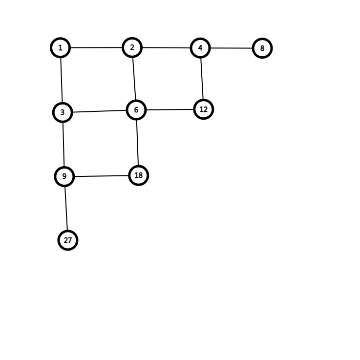

\(T1\)
题解的做法是贪心，但这里提供一种不一样的的解法。
浅浅的打下表
0 3 2 3 2 3 4 5 4 5 6 7 6 7 8 9 8 9 10 11 10
3 2 1 2 3 4 3 4 5 6 5 6 7 8 7 8 9 10 9 10 11
2 1 4 3 2 3 4 5 4 5 6 7 6 7 8 9 8 9 10 11 10
3 2 3 2 3 4 3 4 5 6 5 6 7 8 7 8 9 10 9 10 11
2 3 2 3 4 3 4 5 4 5 6 7 6 7 8 9 8 9 10 11 10
3 4 3 4 3 4 5 4 5 6 5 6 7 8 7 8 9 10 9 10 11
4 3 4 3 4 5 4 5 6 5 6 7 6 7 8 9 8 9 10 11 10
5 4 5 4 5 4 5 6 5 6 7 6 7 8 7 8 9 10 9 10 11
4 5 4 5 4 5 6 5 6 7 6 7 8 7 8 9 8 9 10 11 10
5 6 5 6 5 6 5 6 7 6 7 8 7 8 9 8 9 10 9 10 11
6 5 6 5 6 5 6 7 6 7 8 7 8 9 8 9 10 9 10 11 10
7 6 7 6 7 6 7 6 7 8 7 8 9 8 9 10 9 10 11 10 11
6 7 6 7 6 7 6 7 8 7 8 9 8 9 10 9 10 11 10 11 12
7 8 7 8 7 8 7 8 7 8 9 8 9 10 9 10 11 10 11 12 11
8 7 8 7 8 7 8 7 8 9 8 9 10 9 10 11 10 11 12 11 12
9 8 9 8 9 8 9 8 9 8 9 10 9 10 11 10 11 12 11 12 13
8 9 8 9 8 9 8 9 8 9 10 9 10 11 10 11 12 11 12 13 12
9 10 9 10 9 10 9 10 9 10 9 10 11 10 11 12 11 12 13 12 13
10 9 10 9 10 9 10 9 10 9 10 11 10 11 12 11 12 13 12 13 14
11 10 11 10 11 10 11 10 11 10 11 10 11 12 11 12 13 12 13 14 13
10 11 10 11 10 11 10 11 10 11 10 11 12 11 12 13 12 13 14 13 14
(以下距离均指曼哈顿距离，\(s\) 指跳动的步数)
一些比较显然的隐藏条件。
\(1. \) 第 \(s\) 步扩展到的最大距离为 \(3s\)。
\(2. \) 如果 \(s\) 为奇数，最小距离为 \(2s-3\)，\(s\) 为偶数，最小距离为 \(2s-2\)。
\(3. \) \(s\) 的奇偶性与 \(dis\) 相同。
读者自证不难。
然后是一些隐藏的比较深的限制条件。
(\((\Delta x,\Delta y)\)指末状态与出状态坐标差)
\(1.\) \(\max(\Delta x,\Delta y)\le 2s\)
\(2. \) \(\min(\Delta x,\Delta y)\le s-1\)
证明：自己看图
对每一个\(s\) ,均满足这些条件，那么是否可以通过这些条件通过 \(dis\) 反推出 \(s\) 呢?
反证法：反正就是这样
通过观察图像, 每一个步数出没的宽度只有 \(4\) 行,这四行会出现三种步数，又通过奇偶性，便可以判断该步数。
注：在 \(s\) 比较小的情况，由于步数太少，有可能发生回跳的情况，所以只有 \(s \ge 5 \)时该做法才成立
#include <bits/stdc++.h>
using namespace std;
//#define int long long
#define pii pair<int,int>
const int mod=1e9+7;
inline int read(){
int x=0,f=1;char ch=getchar();
while (ch<'0'||ch>'9'){if (ch=='-') f=-1;ch=getchar();}
while (ch>='0'&&ch<='9'){x=x*10+ch-48;ch=getchar();}
return x*f;
}
queue<pii>q;
int dx[]={0,1,1,2,2,-1,-1,-2,-2},dy[]={0,2,-2,1,-1,2,-2,1,-1};
map<pii,int>mp;
int x2,y2;
inline void bfs1(int x,int y){
q.push({x,y});
mp[{x,y}]=0;
while(q.size()){
pii u=q.front();q.pop();
int ux=u.first,uy=u.second;
for(int i=1,tx,ty;i<=8;i++){
tx=ux+dx[i];ty=uy+dy[i];
if(mp[{tx,ty}]!=0)continue;
mp[{tx,ty}]=mp[u]+1;
if(tx==x2&&ty==y2){
cout<<mp[{tx,ty}]<<endl;
return;
}
q.push({tx,ty});
}
}
}
signed main(){
int x1=read(),y1=read();x2=read(),y2=read();
int l=abs(x2-x1),r=abs(y1-y2);
int len=max(l,r);
int dis=l+r;
if(dis<=60){
bfs1(x1,y1);
return 0;
}
if(dis%2==1){
int r1=(dis+3)/2;
int l1=ceil(dis/3);
for(int i =l1;i<=r1;i++){
if(dis>=2*i-3&&dis<=i*3&&2*i>=len&&len>=i-1&&i%2==1){
cout<<i<<endl;
return 0;
}
}
}
if(dis%2==0){
int r1=(dis+2)/2;
int l1=ceil(dis/3);
for(int i =l1;i<=r1;i++){
if(dis>=2*i-2&&dis<=i*3&&2*i>=len&&len>=i-1&&i%2==0){
cout<<i<<endl;
return 0;
}
}
}
return ~~(0-0);
}
而且该做法跑的飞快，目前最优解第一。
\(T3\)
一道非常有趣的构造题。解法十分精妙。
我们先把每个自然数之间的关系相连

选了一个点，则与其相邻的点便都不能选。
但这样不是很好做。我们仔细观察图形，发现每个点最多被连四条边，可以看做来自四个方向的约束。有点熟悉，不是么？
我们尝试把每一个菱形拉成正方形。

使之构成一个网格图。选了一个点，则上下左右均不能选。想到状压 \(dp\)。
#include <bits/stdc++.h>
using namespace std;
#define int long long
#define pii pair<int,int>
const int mod=1e9+1;
inline int read(){
int x=0,f=1;char ch=getchar();
while (ch<'0'||ch>'9'){if (ch=='-') f=-1;ch=getchar();}
while (ch>='0'&&ch<='9'){x=x*10+ch-48;ch=getchar();}
return x*f;
}
int n;
int a[200][200],len[105],ans=1;
int vis[500500];
int dp[45][1<<13];
int g[1<<15];
int lens;
inline void init(int x) {
lens=0;
for(int i=1;i<=18;i++) {
a[i][1] = (i == 1) ? x : a[i - 1][1] * 2;
if(a[i][1]> n) break;
lens++;
len[i]=vis[a[i][1]]=1;
for(int j=2;j<=11;j++) {
a[i][j]=a[i][j-1]*3;
if(a[i][j]>n)break;
len[i]=j;
vis[a[i][j]]=1;
}
}
}
inline int solve(){
for(int i=0;i<=(1<<len[1])-1;i++)dp[1][i]=g[i];
for(int i=2;i<=lens;i++){
for(int j=0;j<=(1 <<len[i])-1;j++){
if(!g[j])continue;
dp[i][j]=0;
for(int k=0;k<=(1<<len[i-1])-1;k++) {
if(g[k]&&(k&j)==0)dp[i][j]+=dp[i-1][k];
}
}
}
int t=0;
for(int i=0;i<=(1<<len[lens])-1;i++)t=(t+dp[lens][i]) % mod;
return t;
}
signed main(){
n=read();
int all=(1<<11)-1;
for(int i=0;i<=1;i++)g[i]=!(i&(i<<1));
for(int i=1;i<=n;i++){
if(!vis[i]){
init(i);
ans = ans * solve() % mod;
}
}
cout<<ans;
return ~~(0-0);
}
\(T2\)
一眼数位\(DP\),然后就没有然后哩。
\($a=\overline{a_1a_2...a_n} ,f(a)=\prod_{i=1}^n a_i \)$
\($F(a)=a \times f(a)\)$
求有多少\(a\) 使 \(F(a)\in[L,R]\)
显然 \(f(x)
则\(f(x)\le \sqrt{R}\)
故\(f(x)<10^9\)
显然，\(f(x)=2^a 3^b 5^c 7^d\)
故\(f(x)\)只有 \(5000\) 多个.
所以该题可以被简化为
\(P\in N,\)有多少\(x\in[L/P,R/P]\)使\(f(x)=P\)
设计状态 \(\mathrm{dp[pos][cnt[0]][cnt[1]][cnt[2]][cnt[3]]}\) ，其中 \mathrm{pos}pos 表示当前数位，\(\mathrm{cnt[0-3]}\) 分别表示还需填入的 \(2,3,5,7\) 的数量。
注意 \(0\) 对答案的干扰。除了作为前导零以外，为了与上面枚举过程相契合，我们不能在数位上填 \(0\)。
#include <bits/stdc++.h>
using namespace std;
#define int long long
const int mod=1e9+7;
inline int read(){
int x=0,f=1;char ch=getchar();
while (ch<'0'||ch>'9'){if (ch=='-') f=-1;ch=getchar();}
while (ch>='0'&&ch<='9'){x=x*10+ch-48;ch=getchar();}
return x*f;
}
int dp[18][30][19][13][11],f[4]={2,3,5,7},k[4],st,ed,ans;
int zt[10][4]={{0,0,0,0},
{0,0,0,0},
{1,0,0,0},
{0,1,0,0},
{2,0,0,0},
{0,0,1,0},
{1,1,0,0},
{0,0,0,1},
{3,0,0,0},
{0,2,0,0}};
inline int getsum(int sum,int a,int maxl,int st,int ed) {
int b=a+maxl-1,siz=0,num=0;
maxl/=10;
if(a>ed||b<st) return 0;
if(a>=st&&b<=ed) siz=1;
if(sum==18)return !k[0]&&!k[1]&&!k[2]&&!k[3];
if(siz&&dp[sum][k[0]][k[1]][k[2]][k[3]]>=0)return dp[sum][k[0]][k[1]][k[2]][k[3]];
for(int l=(a!=0);l<=9;l++){
bool flag=1;
for(int i=0;i<4;i++){
if(zt[l][i]>k[i])flag=0;
}
if(!flag)continue;
for(int i=0;i<4;i++)k[i]-=zt[l][i];
num+=getsum(sum+1,a+l*maxl,maxl,st,ed);
for(int i=0;i<4;i++)k[i]+=zt[l][i];
}
if(siz)dp[sum][k[0]][k[1]][k[2]][k[3]]=num;
return num;
}
inline void solve(int maxl,int sum,int num) {
if(sum>1000000000)return;
if(num==4){
ans+=getsum(0,0,1e18,(st+sum-1)/sum,ed/sum);
return;
}
solve(maxl,sum,num+1);
k[num]++;//
solve(maxl,sum*f[num],num);
k[num]--;
}
signed main() {
cin>>st>>ed;
memset(dp,-1,sizeof dp);
solve(ed,1,0);
cout<<ans;
return 0;
}
\(T4\)
分析 : 根据 \(Dilworth\) 定理，一个 \(DAG\) 中最长反链的大小，等于其中最小可重链覆盖大小。
最长反链 : 一张有向无环图的最长反链为一个集合 \(S \subseteq V\) , 满足对于 \(S\) 中任意两个不同的点 \(u, v \in S (u \ne v)\)
\(u\) 不能到达 \(v\)， \(v\) 也不能到达 \(u\)。
最小可重链覆盖：在 \(DAG\) 中选出若干条链，经过每个点至少一次，一个点可被一条链经过多次，且链数尽量少。
其实 \(Dilworth\) 定理描述的是：一个偏序集中的最长反链大小，等于其中最小不可重链覆盖大小。
发现当我们将问题抽象到偏序集时，对于该偏序集的关系全集 \(R\) 无法与 \(DAG\) 的边集 \(E\) 一一对应(例如 我们有 \(E = \left\{(a, b), (b, c)\right\}, R = \left\{(a, b), (a, c), (b, c)\right\}\)。
于是我们就要已知 \(E\) 而求出 \(R\)（或者说 "补全" \(E\)）， 这也可以叫做求 传递闭包
我们根据求闭包之后的原图建立一个二分图， 将每个点分裂为 两个点， 记为 \((x, x')\)。
而不可重链覆盖实际上就是把原图划分为一条条链（图意义下），可以想象为：一个 \(n\) 个点的 \(DAG\) 一开始有 \(n\) 条链（一个点为一条）；我们一条条，并尽可能多地选边使剩下的链数目尽量少，同时要求一个点最多有一条出边一条入边（满足链要求）。
这实际上就和求转化的二分图的最大匹配的意义一致：对应原图同一编号的点最多被匹配两次，并尽可能多地选边。
每匹配一条边，就相当在原图取一条边，就能使链数目减少一；于是答案（最小不可重链覆盖数）就等于 \(\text{原图点数目}- \text{最大匹配数}\)。
#include<bits/stdc++.h>
using namespace std;
#define ll long long
#define re register
#define gc getchar
#define pc putchar
#define cs const
inline int getint(){
re int num;
re char c;
while(!isdigit(c=gc()));num=c^48;
while(isdigit(c=gc()))num=(num<<1)+(num<<3)+(c^48);
return num;
}
cs int N=505;
int n;
bool g[N][N],to[N];
int match[N],idx;
int vis[N];
bool ban[N],s[N],t[N];
inline bool find(int u){
if(ban[u])return false;
for(int re v=1;v<=n;++v){
if((vis[v]^idx)&&g[u][v]&&!ban[v]){
vis[v]=idx;
if(!match[v]||find(match[v])){
to[u]=true,match[v]=u;
return true;
}
}
}
return false;
}
inline void dfs(int u){
if(s[u])return ;
s[u]=true;
for(int re v=1;v<=n;++v){
if(g[u][v]&&!t[v])t[v]=true,dfs(match[v]);
}
}
int m;
signed main(){
n=getint(),m=getint();
for(int re i=1;i<=m;++i){
int u=getint(),v=getint();
g[u][v]=1;
}
for(int re k=1;k<=n;++k)
for(int re i=1;i<=n;++i)
for(int re j=1;j<=n;++j)
g[i][j]=g[i][j]||(g[i][k]&&g[k][j]);
int ans=n;
for(int re i=1;i<=n;++i){
++idx;
if(find(i))--ans;
}
printf("%d\n",ans);
for(int re i=1;i<=n;++i)if(!to[i])dfs(i);
for(int re i=1;i<=n;++i)if(s[i]&&!t[i])printf("%d ",i);
return 0;
}